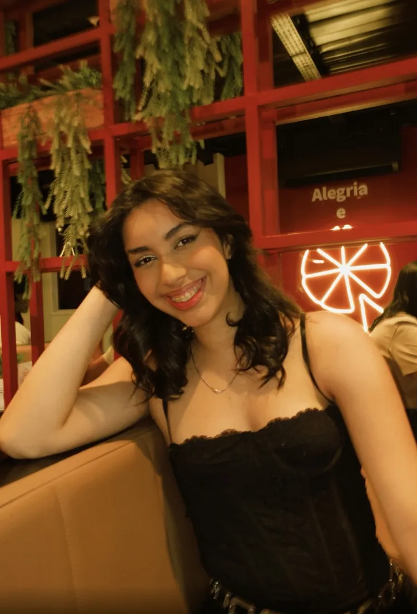

UGC Creator · Natal RN
Yasmin Caetano
UGC que soma estratégia e sensibilidade. Transformo experiências reais em vídeos que geram identificação e influenciam a decisão de compra.

Sobre mim
Produto bom merece uma história à altura.
Prazer, me chamo Yasmin Caetano, sou criadora de conteúdo UGC e influenciadora. Crio conteúdos transformando experiências reais em vídeos que geram identificação e influenciam a decisão de compra.
Minha base vem da maquiagem artística: o olhar treinado pra luz, textura e composição entra em cada roteiro que escrevo. É assim que transformo um produto em conceito visual, com cenário, referência e narrativa, e mostro o que existe além da embalagem.
Moro perto do mar, em Natal RN, e estudo nutrição. São detalhes que entram nos meus roteiros como conexão real, não como enfeite.
- 01Roteiro aprovado por você antes de gravar
- 02Uso vitalício do conteúdo nas suas redes sociais
- 03Entrega em até 7 dias
Yasmin CaetanoUGC Creator
Conteúdo de destaque
Por trás de um vídeo que performou.
Bombado · Gastronomia · Tráfego pago
Uma experiência gastronômica que virou alcance, interação e crescimento. O vídeo foi produzido para o Bombado, explorando o ambiente, a comida e a experiência de forma espontânea e envolvente. A marca usou o conteúdo no tráfego pago, e ele gerou muito mais do que visualizações: gerou novas conexões com a marca.
- visualizações
- 70.900
- pessoas alcançadas
- 33.505
- interações
- 2.281
- novos seguidores
- 1.891
- por visita ao perfil
- R$ 0,10
- de investimento total
- R$ 359,27
O que esse case mostra: além de apresentar o estabelecimento de maneira natural, o vídeo despertou interesse suficiente pra gerar visitas ao perfil, compartilhamentos e crescimento da audiência da marca.
Trabalhos por nicho
Cada nicho, uma linguagem.
Trabalho em vários nichos por escolha: cada um exercita uma forma diferente de gerar desejo, sem abrir mão da qualidade em nenhum deles.
Fotos UGC
Imagem que dá vontade de ter.
Fotos com luz natural, textura e cenário, pensadas pra site, catálogo, anúncio e redes.
Entrega
O caminho de uma campanha depois do sim.
Um processo fixo, pra você saber exatamente o que acontece em cada etapa e o que recebe no final.
Na pasta do Drive vai
Investimento
Pacotes pra sua marca começar.
Pacotes fechados pra facilitar sua decisão. Nichos ou exclusividade sob medida? Só chamar.
Números e depoimentos
Resultados que falam por mim.
Resultados de campanha
Quem já trabalhou comigo
Contato
Bora criar juntos?
Me conta sobre a sua marca, o produto e a campanha. Eu respondo com uma ideia de roteiro e o orçamento.
Mensagem recebida!
Valeu pelo contato! Eu te respondo em breve no e-mail que você deixou.
Ver meu Instagram